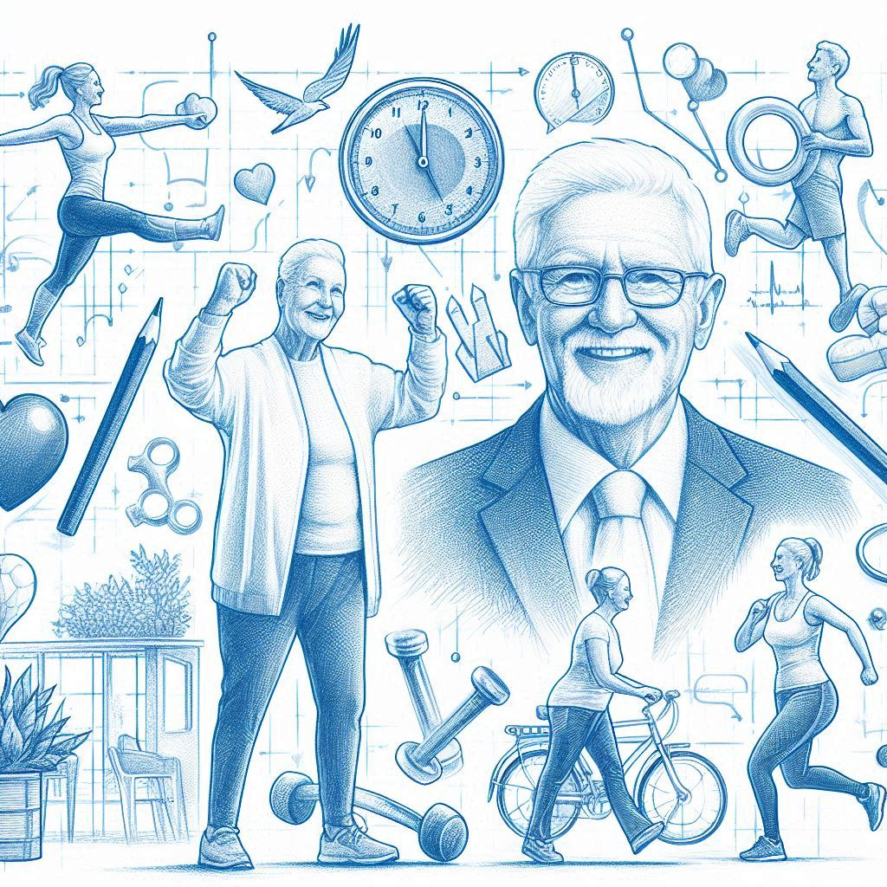

노화의 종말
하버드 의대 수명 혁명 프로젝트
작가 :
데이비드A.싱클레어, 매슈 D.러플랜트출판일 :
2020.08.10감상평 :
데이비드 박사의 '노화의 종말'은 노화를 질병으로 간주하여 치료할 수 있다는 새로운 패러다임을 제시하는 과학도서이다. 평소 노화로 인한 질병의 무서움을 알고 건강을 중요시하던 나로서 노화 자체를 치료하자고 하는 책의 내용이 아주 색다르게 느껴졌다. 노화 연구의 역사와 현재 진행되고 있는 연구까지 보았는데, 모두 하나같이 기존의 인식을 뛰어넘는 혁신적인 연구라 흥미로웠다. 또한 노화를 늦추는 다양한 방법들, 영양제부터 라이프 스타일의 변화까지 알게 되었는데, 평소에 실천해서 건강한 몸을 유지해야겠다는 생각이 들었다. 앞으로도 노화 관련 연구에 대해 관심을 가지고 더 많이 알아보고 싶다.감상평에 대한 AI 그림:
- 
감상평에 대한 AI감정평가:
1. 호기심과 경이로움: 노화를 질병으로 간주하여 치료할 수 있다는 새로운 패러다임에 대한 독자의 반응에서 호기심과 경이로움이 느껴집니다. 기존의 인식을 뛰어넘는 혁신적인 연구에 대한 흥미와 관심이 드러나 있습니다.
2. 자기 개선과 의지: 노화를 늦추는 다양한 방법들, 영양제부터 라이프 스타일의 변화를 통해 건강한 몸을 유지해야겠다는 생각을 통해, 독자는 자기 개선과 의지를 나타내고 있습니다. 건강을 중요시하며 스스로 실천하려는 강한 의지가 보입니다.
3. 열망과 지속적 학습: 독자가 노화 관련 연구에 대해 지속적으로 관심을 가지고 더 많이 알아보고 싶다는 열망을 드러내고 있습니다. 이는 새로운 지식을 탐구하고자 하는 지속적 학습의 감정을 보여줍니다.